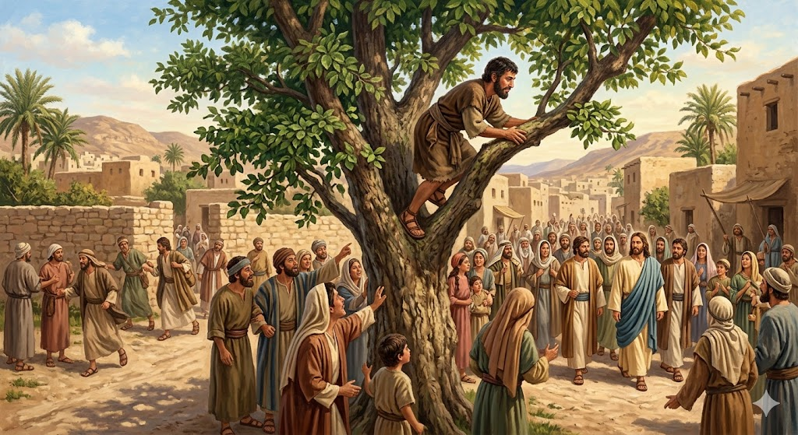
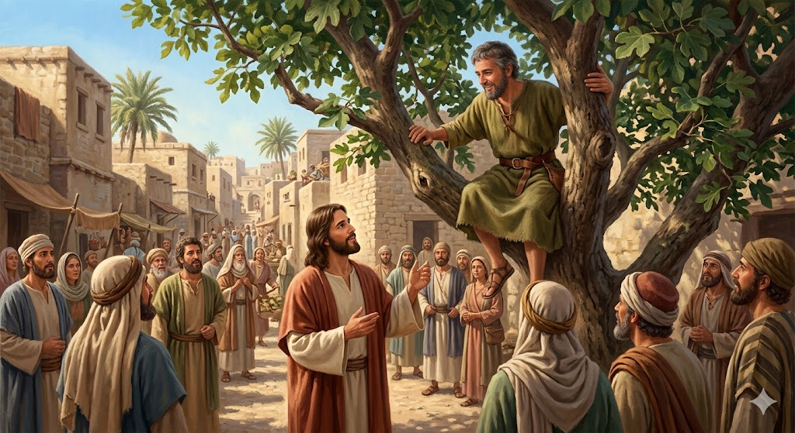
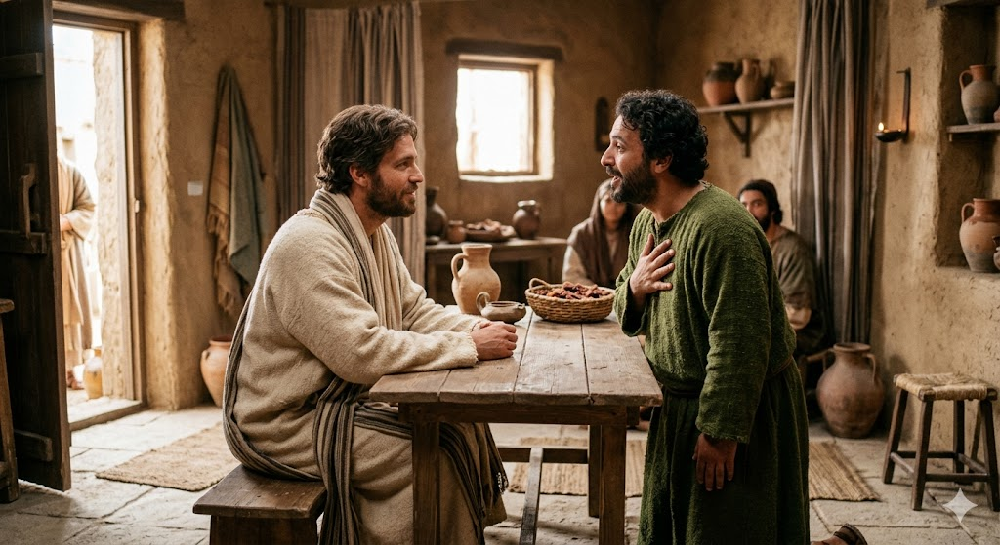

Zacheu era un om bogat, dar nu prea avea prieteni pentru că nu fusese întotdeauna cinstit. Când a auzit că Iisus trece prin orașul lui, a vrut neapărat să Îl vadă, dar era prea mic de statură ca să vadă peste mulțime.
1. Scara din Frunze
Zacheu nu s-a lăsat bătut! A alergat înainte și s-a urcat într-un dud (un copac mare cu multe frunze). De acolo, de sus, putea vedea tot drumul. Se credea ascuns, dar nu știa că Iisus cunoaște inima fiecărui om.

2. O Vizită Surpriză
Când Iisus a ajuns sub copac, S-a oprit, s-a uitat în sus și l-a strigat pe nume: „Zacheu, dă-te jos repede, căci astăzi trebuie să rămân în casa ta!”. Zacheu a coborât plin de bucurie; era prima dată când cineva atât de important voia să fie prietenul lui.

3. O Inimă Nouă
Întâlnirea cu Iisus l-a schimbat pe Zacheu complet. El a promis că va da înapoi de patru ori mai mult celor pe care îi păcălise și că va împărți jumătate din averea lui cu săracii. Din acea zi, Zacheu nu a mai fost un om singur, ci un om bun și generos.

„Iisus i-a zis: «Zachee, dă-te jos degrabă, căci astăzi trebuie să rămân în casa ta».”
- Luca 19:5
🌟 Concluzia Noastră
Dumnezeu ne iubește pe fiecare și ne știe pe nume, chiar și atunci când ne simțim mici sau ascunși. O singură zi petrecută cu El ne poate schimba inima și ne poate face mai buni!
🌳 Știai că?
Copacul în care s-a urcat Zacheu se numește sicomor (un fel de dud sălbatic). Acești copaci sunt foarte robuști și au ramuri joase, fiind perfecți pentru cățărat, chiar și pentru un adult care nu este foarte înalt!